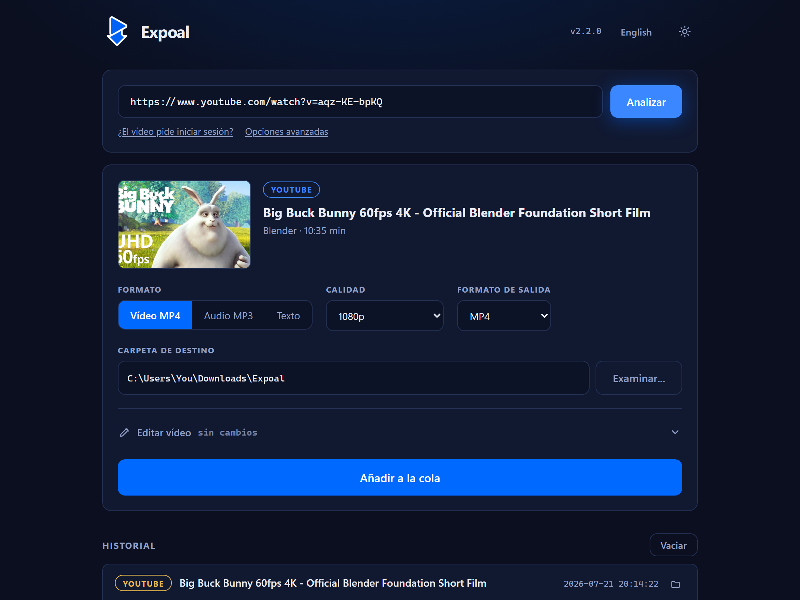
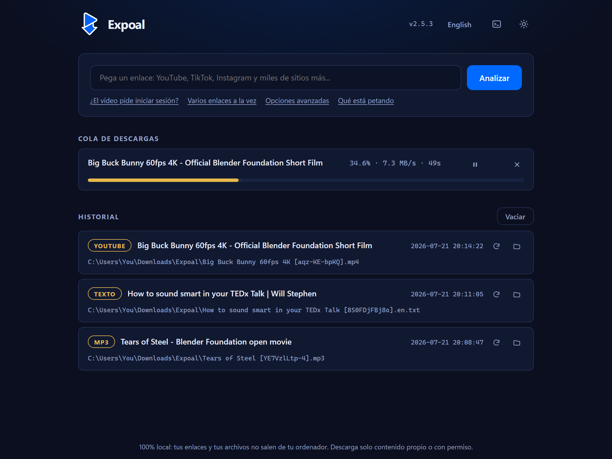

Descarga solo lo que puedas
Usa Expoal únicamente con contenido propio, con licencia libre (Creative Commons, dominio público) o para el que tengas permiso expreso de quien lo creó.
Pega un enlace de YouTube, TikTok, Instagram o miles de sitios más y Expoal guarda el vídeo en tu propio ordenador. 100% open source, local y gratis.
Windows 10/11 · AppImage para Linux · se actualiza solo · ver el código
Pruébalo aquí mismo
Una demostración de la app real. Trastea con ella: es la misma interfaz que te llevas.
Enlace de ejemplo listo. Pulsa Analizar y verás lo que hace la app.
Sin anuncios ni pasos de más
Una herramienta directa que corre entera en tu PC.
Tus enlaces y archivos nunca salen de tu ordenador.
Elige formato y calidad, hasta la máxima disponible.
Varias descargas con progreso en vivo y registro de todo.
Un aviso, un clic, y siempre tienes la última versión.
Nada de maquetas
Una captura de verdad de Expoal funcionando. Lo de ahí arriba es una recreación; esto es lo real.

Pega un enlace, Expoal lee el vídeo y te deja elegir formato, calidad y carpeta.

Progreso, velocidad y tiempo restante mientras descarga; cancélala con un clic.
Así de corto
Gratis y open source. Sin registros, sin cuentas.
Antes de usarlo
Expoal es una herramienta. Lo que hagas con ella es cosa tuya, así que léete esto.
Usa Expoal únicamente con contenido propio, con licencia libre (Creative Commons, dominio público) o para el que tengas permiso expreso de quien lo creó.
Descargar obras protegidas sin autorización puede infringir la ley de propiedad intelectual de tu país y las condiciones de uso de la plataforma de origen.
Expoal se ofrece tal cual, sin garantías. El autor no se hace responsable del uso que hagas del programa ni de los daños, reclamaciones o consecuencias legales derivadas de un uso indebido. Al usarlo, aceptas asumir esa responsabilidad.
Expoal es un proyecto independiente. No está asociado ni patrocinado por YouTube, TikTok, Instagram ni ninguna otra plataforma, y sus marcas pertenecen a sus dueños.
Publicado bajo licencia MIT, que incluye la exención de garantías y de responsabilidad.